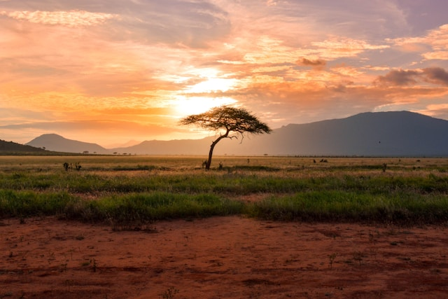
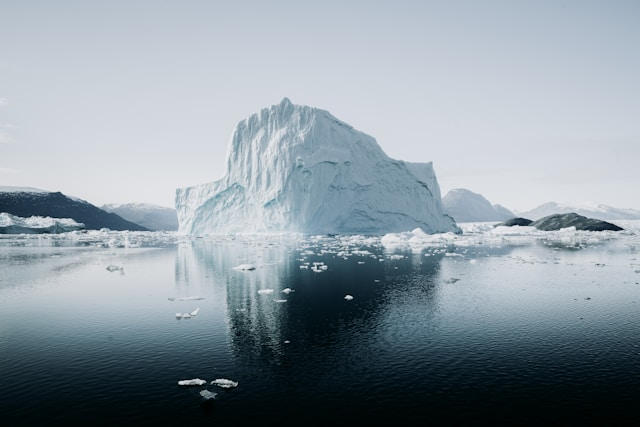
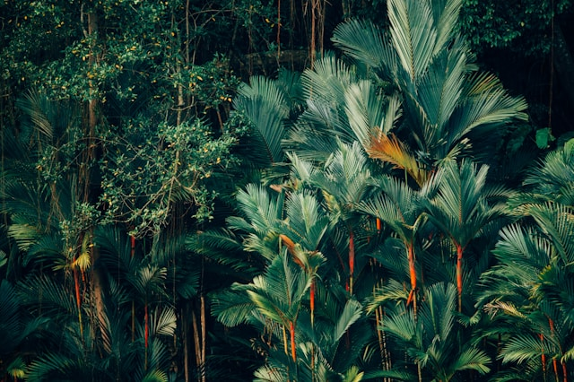
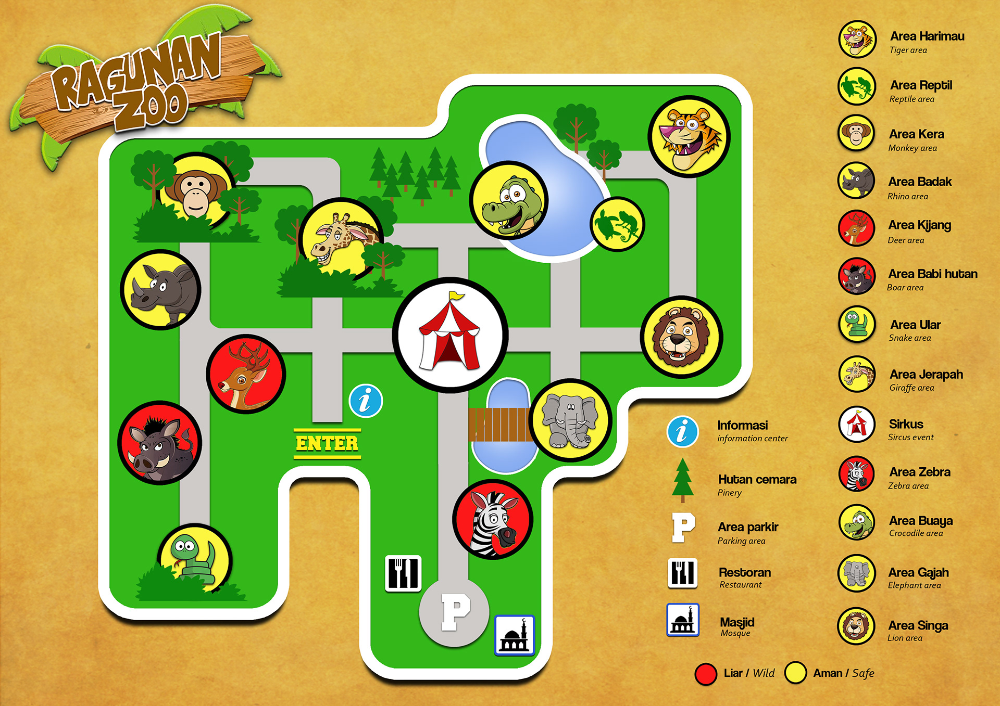

Mulailah perjalanan menjelajahi beragam ekosistem. Temukan keseimbangan alam yang rapuh dan bagaimana setiap makhluk hidup terhubung di habitat imersif kami.
Jelajahi berbagai benua dalam satu hari. Setiap habitat dirancang dengan cermat untuk mendukung keanekaragaman hayati.



Hormati jalur yang dilalui hewan liar. Jangan memberi makan hewan-hewan tersebut, karena mereka diberi makanan khusus yang dipantau secara cermat oleh para ahli kami.
Semua jalur utama, toilet, dan fasilitas makan sepenuhnya dapat diakses oleh kursi roda. Skuter mobilitas tersedia untuk disewa di pintu masuk utama.
Hewan-hewan lebih aktif pada pagi hari atau sore hari. Bawalah botol air minum yang dapat digunakan kembali. Stasiun pengisian air tersedia di seluruh area.
